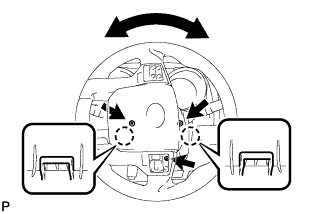

РУЧНОЙ ПЕРЕКЛЮЧАТЕЛЬ НАКЛОНА И ТЕЛЕСКОПИЧЕСКОГО ИЗМЕНЕНИЯ ВЫСОТЫ > СНЯТИЕ |
| 1. РАСПОЛОЖИТЕ ПЕРЕДНИЕ КОЛЕСА СТРОГО ПРЯМО |
| 2. ОТСОЕДИНИТЕ ПРОВОД ОТ ОТРИЦАТЕЛЬНОГО ВЫВОДА АККУМУЛЯТОРНОЙ БАТАРЕИ |
Отключите функцию автоматического отвода/возврата, изменив значение настраиваемого параметра (Нажмите здесь).
Включите зажигание (IG). С помощью переключателя наклона и телескопического изменения высоты полностью выдвиньте и опустите рулевую колонку.
Выключите зажигание и отсоедините провод от отрицательного (-) вывода аккумуляторной батареи.
| 3. СНИМИТЕ НИЖНИЙ КОЖУХ РУЛЕВОЙ КОЛОНКИ |
|  |
Выверните 3 винта.
Освободите 2 захвата и снимите нижний кожух рулевой колонки.
| 4. СНИМИТЕ ПЕРЕКЛЮЧАТЕЛЬ НАКЛОНА И ТЕЛЕСКОПИЧЕСКОГО ИЗМЕНЕНИЯ ВЫСОТЫ |
 |
Отсоедините разъем.
Освободите захват и вытяните переключатель наклона и телескопического изменения высоты.